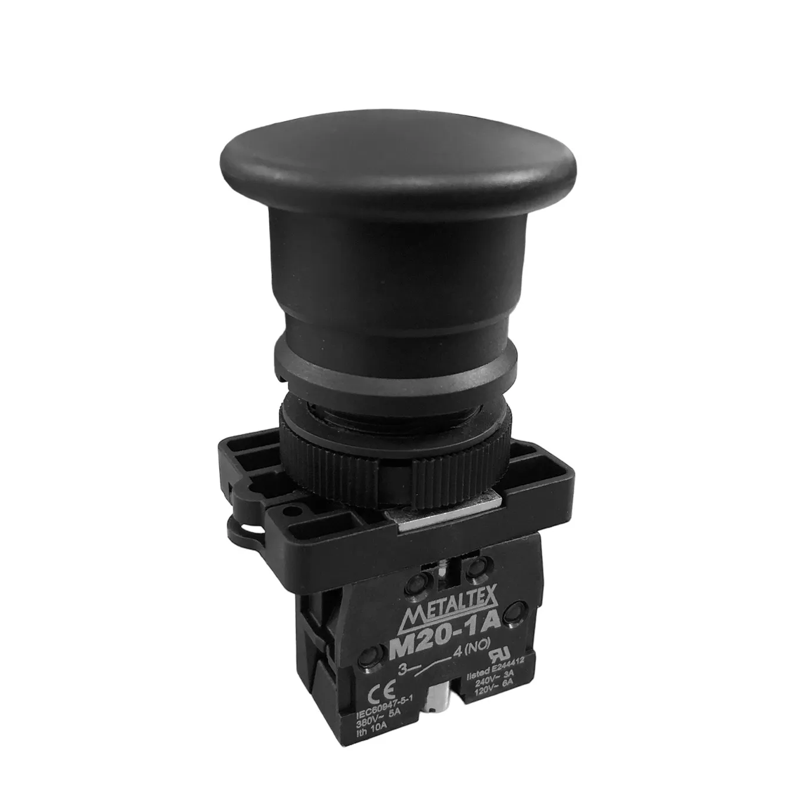

O botão de pulso, também conhecido no meio industrial como botoeira, é o dispositivo mais básico para dar ordens manuais a um circuito elétrico. A sua principal característica técnica é o mecanismo de retorno por mola. Isso significa que ele não tem retenção mecânica: quando o operador pressiona o botão com o dedo, os contatos internos mudam de estado, mas assim que o dedo é retirado, a mola interna força o botão a voltar imediatamente para a sua posição inicial de repouso.
Na prática, ele serve para enviar sinais ou "pulsos" elétricos rápidos para acionar outros componentes, como contatores e relés. Eles são amplamente aplicados na partida e parada de motores elétricos e em painéis de comando de máquinas.

Em relação aos tipos, eles se dividem pelo formato da cabeça em: faceado (onde a superfície do botão fica alinhada com o aro protetor para evitar acionamentos acidentais por esbarrões); saliente ou cogumelo (que fica projetado para fora, facilitando o aperto rápido); iluminado (que possui um LED interno para indicar se o circuito está ativo); e o duplo, que une dois botões em um único bloco. Internamente, eles usam contatos do tipo NA (Normalmente Aberto, usado para ligar) e NF (Normalmente Fechado, usado para desligar).

Para saber mais!
Ao contrário do botão de pulso, a chave de retenção possui um mecanismo de trava mecânica. Quando o operador aciona esse dispositivo, ele muda de posição física e permanece travado nela, sustentando o sinal elétrico sem que ninguém precise ficar segurando. Para desfazer a ação e desligar o circuito, é necessário que o operador mude manualmente a posição da chave outra vez.

Os tipos mais comuns são as chaves seletoras rotativas (manoplas que você gira para escolher a opção), as chaves tipo alavanca ou comutadoras (muito vistas em painéis antigos ou de testes) e as chaves com fechadura física, que só mudam de posição se o operador inserir uma chave metálica de segurança, impedindo que pessoas não autorizadas mexam na máquina.
Sua aplicação principal ocorre quando o circuito necessita de um comando permanente ou de uma seleção de estado de longa duração. Elas são muito utilizadas como chaves gerais de ligar e desligar equipamentos, interruptores de iluminação e seletores de modo de operação em painéis industriais (por exemplo, alternando o funcionamento de uma máquina entre o modo "Manual" e o modo "Automático").